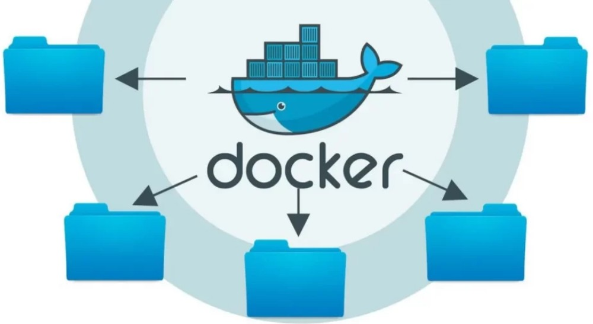
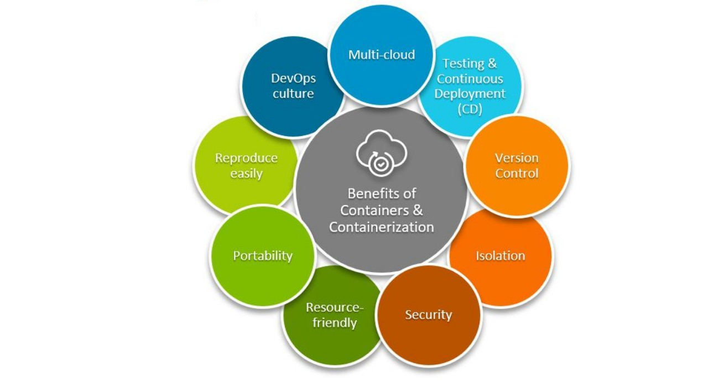

Simplifying Software Deployment: Containerization with Docker and Java
In the fast-paced world of software development, efficiency and scalability are key factors in delivering robust applications. Containerization has emerged as a game-changer, streamlining the deployment process and enhancing the consistency of applications across various environments. Docker, a leading containerization platform, has become synonymous with agility and reproducibility in the development pipeline. In this blog, we will explore the seamless integration of Docker with Java, unleashing the power of containerization for Java-based applications.
The Power of Docker in a Nutshell
Docker simplifies the packaging and distribution of applications by encapsulating them into containers. A container bundles the application along with its dependencies, libraries, and runtime, ensuring consistent behavior across different environments. This isolation promotes flexibility, making it easier to deploy applications on any system that supports Docker, from development to production.
Dockerize Java Applications
Java, with its "write once, run anywhere" philosophy, is an ideal candidate for containerization. Docker allows Java applications to be packaged into lightweight, portable containers, ensuring that they run consistently across diverse environments. The process involves creating a Dockerfile, a script that defines the steps needed to build a Docker image. This image encapsulates the Java application and its dependencies.
Key Steps in Dockerize Java Applications
1. Dockerfile Creation: Start by creating a Dockerfile
in the root of
your
Java project. Specify the base image, copy the application code, and
configure the necessary dependencies.
FROM openjdk:11
COPY . /usr/src/myapp
WORKDIR /usr/src/myapp
RUN javac Main.java
CMD ["java", "Main"]
2. Building Docker Image: Execute the following command
in the project directory to build the Docker image.
docker build -t my-java-app .
3. Running the Container: Once the image is built, run
the container with the following command.
docker run my-java-app
Docker and Java: Unleash Consistency, Boost Scalability. Simplifying Deployment for a Seamless, Reliable, and Dynamic Software Experience.

Benefits of Docker and Java Integration
1. Consistency: Docker ensures that the Java application
runs consistently across development, testing, and production
environments.
2. Isolation: Containers isolate applications,
preventing conflicts between dependencies and guaranteeing a
reproducible runtime environment.
3. Scalability: Docker's lightweight nature allows for
easy scaling of Java applications by quickly spinning up additional
containers.
In conclusion, the marriage of Docker and Java streamlines the deployment process, offering developers a reliable and consistent environment. Embracing containerization enhances collaboration, accelerates development cycles, and ensures that Java applications are ready for the dynamic demands of modern software development. Start containerizing your Java applications today and experience the revolution in software deployment.